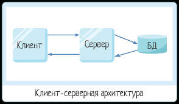
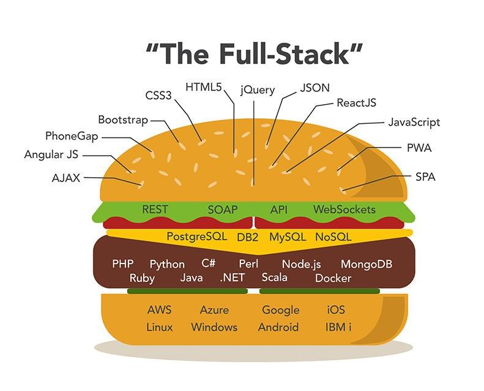

Данная страница является учебным проектом и отражает моё концептуальное понимание веб-разработки с позиции клиент-серверной архитектуры.
При первом упоминании технологии в тексте даётся ссылка на официальную документацию.
Клиент-серверная архитектура - разделение процессов предоставление услуг и отправки запросов на них на разных компьютерах в сети, каждый из которых выполняют свои задачи независимо от других.
Схема взаимодействия клиента, сервера и базы данных
Фронтенд - пользовательский интерфейс и связанные с ним компоненты.
Бэкенд - внутренняя логика и взаимодействие с базой данных.
Поскольку фронтенд и бэкенд являются разными сторонами одного программно-аппаратного комплекса, мне интересен фуллстек - комплексный взгляд на веб-приложение. Я бы развивался в направлении фуллстек Python Django веб-разработки.
